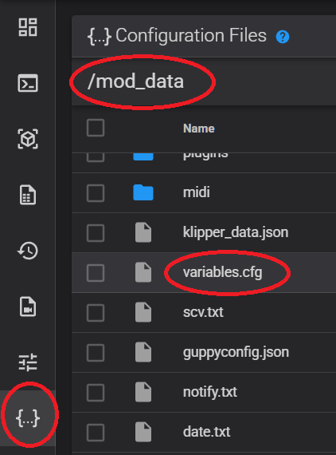

FAQ¶
Často kladené otázky¶
Note
Nainstalovali jste mod.
Nechcete nic řešit – tiskněte jako dříve.
Není třeba nic konfigurovat ani měnit.
Jste připraveni jít dál? Pokračujte čtením dokumentace.
Úložiště konfigurace¶
Přístup do složky mod_data přes webové rozhraní Fluidd:
Configuration → Configuration Files → mod_data
- Vlastní nastavení Klipperu patří do
mod_data/user.cfg, kterým lze přepsat/doplnitprinter.base.cfga soubory Z-Mod. - Vlastní nastavení Moonrakeru patří do
mod_data/user.moonraker.conf. - Vlastní MIDI soubory jsou uloženy v
mod_data/midi/. - Globální nastavení modu se ukládají pomocí makra SAVE_ZMOD_DATA.
- Kód spouštěný při vypnutí tiskárny:
mod_data/power_off.sh. - Kód spouštěný při zapnutí tiskárny:
mod_data/power_on.sh.
Soubory Z-Mod a pluginů neměňte – narušilo by to systém aktualizací.
Jakoukoliv funkci lze přepsat v mod_data/user.cfg nebo printer.cfg.
Známé zvláštnosti:¶
- Během akcí jako
M109(nahřívání extruderu),M190(nahřívání podložky), kalibrace PID nebo jakékoli pauzy v G-code nativní obrazovka zamrzne. - Restart Klipperu (po uložení sítě podložky, PID, shaperů atd.) nativní obrazovku zamrazí (pro restarty použijte NEW_SAVE_CONFIG nebo globální parametr).
-
Po zrušení tisku stiskněte "OK" na tovární obrazovce (použijte CLOSE_DIALOGS nebo FAST_CLOSE_DIALOGS).
-
Tovární obrazovka vždy načte profil
DEFAULT_MESHpři zahájení tisku a po tisku smaže profilDefault.
Poznámky k režimu bez nativní obrazovky:¶
- Odstraňte veškerý startovací G-code a použijte makra START_PRINT a END_PRINT.
- Nativní kamera je vypnutá; použijte alternativní kameru přes CAMERA_ON.
- AD5M/AD5X: v případě potřeby ručně nastavte
Z_OFFSETv START_PRINT nebo použijte LOAD_ZOFFSET k načtení uložených offsetů. - Pokud chcete přenést Z-offset z nativní obrazovky do režimu bez nativní obrazovky, spusťte makro
LOAD_ZOFFSET_NATIVE– přečte Z-offset z nativní obrazovky a použije ho v režimu bez nativní obrazovky. Pro Creator 5 / Creator 5 Pro není potřeba. - Síť podložky
autose načítá automaticky při startu. -
Protokol FlashForge není podporován (zpracovává ho nativní obrazovka). Použijte „Octo/Klipper“:
- Host Type:
Octo/Klipper - Printer Agent:
Moonraker
Pro Creator 5 / Creator 5 Pro / AD5X:
- Hostname:
IP_printer

Pro FF5M / FF5M Pro:
- Hostname:
IP_printer:7125 - Device UI:
IP_printerneboIP_printer:80

- Host Type:
Jak se liší Z-Mod od KlipperMod/nativního firmwaru?¶
Rozdíly mezi KlipperMod a Z-Mod:
- KlipperMod používá čistý Klipper s minimem změn specifických pro FlashForge 5M (Pro).
- Z-Mod používá standardní Klipper z nativního firmwaru a také Klipper 13.
- KlipperMod používá KlipperScreen jako obrazovku tiskárny.
- Z-Mod používá nativní obrazovku nebo GuppyScreen/HelixScreen místo KlipperScreen.
- KlipperMod používá Moonraker-timelapse.
- Z-Mod používá moonraker-telegram-bot na EXTERNÍM hostiteli s podporou časosběru nebo plugin TimeLapse.
Různé filozofie:
- KlipperMod je v podstatě alternativní implementace firmwaru.
- Z-Mod má minimální zásahy do nativního firmwaru. Všechny funkce nativního firmwaru jsou zachovány.
Proto Z-Mod nebude obsahovat G17, G18, G19 – i když by to bylo jednoduché. Nebudou žádné aktualizace nativního Klipperu, žádné přejmenovávání nebo změny standardních maker, nastavení, názvů pinů atd.
Z-Mod NENÍ založen na KlipperModu a NENÍ jeho evolucí. Z-Mod sice používá některá makra a skripty z KlipperModu a přebírá některé jeho postupy, ale neočekávejte, že se bude chovat jako KlipperMod.
Z-Mod je binárně nekompatibilní s KlipperMod.
Co je v KlipperMod, ale ne v Z-Mod:¶
- KlipperScreen - obrazovka pro tiskárnu. V Z-Mod se místo KlipperScreen používá nativní obrazovka nebo GuppyScreen/HelixScreen.
- Moonraker-timelapse - Z-Mod používá Telegram bota a plugin Timelapse.
- Konfigurace sítě přes iwd/wpa_supplicant (v případě GuppyScreen/HelixScreen) - v Z-Mod se konfigurace sítě provádí přes nativní obrazovku, spuštění sítě je možné i bez nativní obrazovky.
Co je v Z-Mod, ale ne v KlipperMod:¶
- Podpora AD5X
- Podpora Creator 5 / Creator 5 Pro
- Podpora následujících jazyků: Angličtina, Němčina, Francouzština, Italština, Španělština, Čínština, Japonština, Korejština, Portugalština, Čeština, Turečtina, Ruština
- Práce s nativní obrazovkou
- Obnovení tisku po výpadku napájení
- Kalibrace shaperu s grafy s ohledem na SCV (square_corner_velocity)
- Kontrola a oprava souborů/oprávnění/symbolických odkazů pro nativní souborový systém
- Automatické aktualizace pro
Fluidd/Mainsail/Moonrakera Z-Mod přes síť - Entware
- Oprava chyby E0017
- Navíc GuppyScreen/HelixScreen podporuje: kalibraci PID, ovládání shaperů, firmwarovou retrakci, čištění trysky, reset tenzometrů, nastavení šroubů, ColdPull, vylepšené měření sítě podložky
- Opravené řízení ventilátorů chlazení driverů. Zapínají se automaticky, když jsou motory aktivní. V nativním firmwaru - pouze během tisku.
- Adaptivní síť podložky KAMP
- Kalibrace PID pro extruder a podložku, včetně přes GuppyScreen/HelixScreen
- COLDPULL (čištění trysky) bez použití síly. Implementace tohoto algoritmu
Co je v Z-Mod, ale ne v nativním firmwaru:¶
- Podpora Moonraker/Fluidd/Mainsail
- Podpora Klipper 13
- Podpora Telegram bota
- Všechny funkce uvedené ve srovnání s KlipperMod
- Nativní firmware odesílá mnoho dat na čínské servery, tomu se lze vyhnout použitím Z-Mod s GuppyScreen/HelixScreen
Co je to MAKRO? Jak ho spustit, stáhnout a používat¶
Makro je malý program napsaný v jazyce Klipper/G-code.
Lze ho vyvolat:
- ze souboru G-code
- z konzole Fluidd/Mainsail ježek
Používám verzi s obrazovkou. Posílám soubor k tisku, ale obrazovka ukazuje teplotu 0 0 a tisk nezačne.¶
Přidejte tyto dva řádky na úplný začátek startovacího kódu:
M190 S[bed_temperature_initial_layer_single]
M104 S[nozzle_temperature_initial_layer] T{single_extruder_multi_material ? 0 : initial_extruder}
Bez těchto řádků obrazovka tiskárny nezná cílové teploty pro trysku a podložku. hroch
Musím něco měnit ve startovacím kódu?¶
Pokud používáte nativní obrazovku, nejsou potřeba žádné změny.
Pro provoz bez nativní obrazovky / s GuppyScreen (doporučeno i s nativní obrazovkou) nahraďte celý startovací kód tímto:
START_PRINT EXTRUDER_TEMP=[nozzle_temperature_initial_layer] BED_TEMP=[bed_temperature_initial_layer_single]
M190 S[bed_temperature_initial_layer_single]
M104 S[nozzle_temperature_initial_layer] T{single_extruder_multi_material ? 0 : initial_extruder}
SET_PRINT_STATS_INFO TOTAL_LAYER=[total_layer_count]
START_PRINT EXTRUDER_TEMP=... BED_TEMP=... musí být na jednom řádku.
A koncový kód tímto:
END_PRINT
Pro správné počítání vrstev ve Fluidd přidejte do G-code před změnou vrstvy:
SET_PRINT_STATS_INFO CURRENT_LAYER={layer_num + 1}
Chcete-li při každém tisku měřit síť podložky, zadejte jednou v konzoli Fluidd/Mainsail:
SAVE_ZMOD_DATA CLOSE_DIALOGS=2 PRINT_LEVELING=1 USE_KAMP=1
Nastavení -> Ikona Wi-Fi -> Režim sítě -> zapnout Pouze místní síť.
Přečtěte si dokumentaci k START_PRINT a SAVE_ZMOD_DATA, abyste využili pokročilé funkce Z-Mod.
Pro firmwarovou retrakci si přečtěte Co je to firmwarová retrakce a přidejte do Profilu filamentu -> Pokročilé -> Start G-code filamentu:
SET_RETRACTION RETRACT_LENGTH=[filament_retraction_length]
mýval
Jak funguje Z-Offset?¶
Creator 5 / Creator 5 Pro
U Creator 5 / Creator 5 Pro je Z-offset s nativní obrazovkou i v režimu bez nativní obrazovky stejný – oba jsou plně synchronizované. Pokud je nativní obrazovka vypnutá, můžete Z-offset měnit během tisku přes GuppyScreen, HelixScreen, Fluidd nebo Mainsail – uloží se.
Přečtěte si článek „Jak funguje Z-offset na vaší tiskárně“
Při použití nativní obrazovky mod do Z-offsetu nezasahuje; používá se Z-offset uložený na obrazovce.
Z-offset s nativní obrazovkou a v režimu bez nativní obrazovky není stejný: každý žije vlastním životem a nastavuje se samostatně.
Pro zkopírování Z-offsetu z nativní obrazovky do režimu bez nativní obrazovky použijte LOAD_ZOFFSET_NATIVE. Pro Creator 5 / Creator 5 Pro není potřeba.
Úpravy Z-offsetu přes Fluidd/Mainsail/GuppyScreen/HelixScreen ovlivňují tisk pouze do restartu. Neměňte ho, pokud nerozumíte, kam se tryska pohybuje.
Každé volání SET_GCODE_OFFSET (automaticky spuštěné při úpravě Z-offsetu z Fluidd/Mainsail/GuppyScreen/HelixScreen) uloží aktuální z-offset do globálních parametrů modu. Tato uložená hodnota se použije pouze pokud je povolen globální parametr LOAD_ZOFFSET (ve výchozím stavu vypnutý; zapnete ho pomocí SAVE_ZMOD_DATA LOAD_ZOFFSET=1), není použita nativní obrazovka a je využito makro START_PRINT.
Z-offset lze také nastavit pomocí parametrů START_PRINT:
- Z_OFFSET - Nastaví Z-offset (0.0)
Jaké jsou možnosti pro vyrovnávání podložky?¶
Chcete-li při každém tisku měřit síť podložky, zadejte jednou v konzoli Fluidd/Mainsail:
SAVE_ZMOD_DATA CLOSE_DIALOGS=2 PRINT_LEVELING=1 USE_KAMP=1
Nativní obrazovka vždy používá:
MESH_DATAstandardněDEFAULT, pokud je zaškrtnutoLeveling(měření sítě před tiskem);DEFAULTse po tisku vždy smaže.
Bez nativní obrazovky se síť auto načte automaticky při startu.
Chcete-li použít jinou síť, vypněte automatické měření (SAVE_ZMOD_DATA PRINT_LEVELING=0):
- Specifikujte pomocí parametru
MESHv START_PRINT. Např.START_PRINT MESH=my_80_degree_mesh - Načtěte pomocí
BED_MESH_PROFILE LOAD=my_80_degree_meshv profilu filamentu. Zajistěte konzistenci mezi profilem aSTART_PRINT, nebo vypněte čištění trysky vSTART_PRINT. - Síť předem změřte pomocí AUTO_FULL_BED_LEVEL. Např.
AUTO_FULL_BED_LEVEL EXTRUDER_TEMP=230 BED_TEMP=80 PROFILE=my_80_degree_mesh
Přes globální parametry¶
Použijte parametry PRINT_LEVELING a USE_KAMP. Zapnete je pomocí:
SAVE_ZMOD_DATA PRINT_LEVELING=1
SAVE_ZMOD_DATA USE_KAMP=1
Úpravou startovacího kódu a makra START_PRINT¶
Příklady:
Warning
FORCE_LEVELING ani FORCE_KAMP nejsou samostatná makra, ale parametry makra START_PRINT.
-
Plná síť podložky:
START_PRINT EXTRUDER_TEMP=[nozzle_temperature_initial_layer] BED_TEMP=[bed_temperature_initial_layer_single] FORCE_LEVELING=True -
Adaptivní síť podložky:
START_PRINT EXTRUDER_TEMP=[nozzle_temperature_initial_layer] BED_TEMP=[bed_temperature_initial_layer_single] FORCE_KAMP=True
Přes makra a tlačítka ve Fluidd¶
Použijte:
- AUTO_FULL_BED_LEVEL (tlačítko
BED LEVELINGve Fluidd) - KAMP
- Standardní Klipper makra (nedoporučeno)
Použití standardních příkazů Klipperu¶
Pro práci s MESH existují standardní makra Klipperu:
- BED_MESH_CALIBRATE - změřit síť podložky
- BED_MESH_OUTPUT - vypsat síť podložky
- BED_MESH_PROFILE - načíst, smazat, uložit síť podložky
Pokud síť načítáte příkazy Klipperu v profilu filamentu, ujistěte se, že v START_PRINT i v profilu filamentu používáte stejnou síť, nebo v START_PRINT vypněte čištění trysky a spouštějte ho samostatně přes profil filamentu.
Důrazně doporučujeme přečíst si možnosti čištění trysky:
- CLEAR_NOZZLE - Čištění trysky jako v nativním firmwaru
- Parametr PRECLEAR - Dodatečné čištění trysky při měření sítě podložky.
- Parametr CLEAR - čtyři algoritmy (lze přidat vlastní) čištění trysky linkou před tiskem.
Proč jsou v dokumentaci periodicky zmiňována jména zvířat?¶
Dokumentaci málokdo čte, i když je v ní zodpovězeno 90 % otázek. Abych ověřil, zda ji někdo opravdu četl, jsou v textu skryta jména zvířat. Pokud jste sem byli odkázáni, přečtěte si dokumentaci a uveďte zvíře u vaší otázky – pak určitě dostanete pomoc:
Jaký je rozdíl mezi provozem s nativní obrazovkou a bez ní?¶
Tiskárna může pracovat ve dvou režimech:
- S nativní obrazovkou - v tomto případě je téměř veškerá logika ovládána nativní obrazovkou a mnoho funkcí nelze změnit.
- Bez nativní obrazovky - v tomto případě jsou všechny funkce ovládány Z-Modem. To neznamená, že musíte obrazovku vypnout nebo ji nahradit jinou. V režimu bez nativní obrazovky můžete použít alternativní softwarovou obrazovku GuppyScreen/HelixScreen nebo obrazovku úplně vypnout – pak zůstane tmavá.
Warning
Nevypínejte obrazovku, dokud plně nerozumíte síti podložky, Z-offsetu a makrům START_PRINT/END_PRINT.
Vypnutí obrazovky šetří RAM, ale mění správu tisku (start/pauza/pokračování/zrušení/obnova po výpadku napájení, přenos souborů). Podle toho upravte startovní/koncový G-code. los
Bez nativní obrazovky se Z-offset z obrazovky nepoužije. Použijte parametry START_PRINT nebo globální nastavení. Detaily
Přečtěte si zvláštnosti provozu bez nativní obrazovky.
Co je to alternativní kamera?¶
Nativní kamera, která se zapíná z obrazovky, má řadu nevýhod:
- Vysoká spotřeba RAM
- Nízká kvalita obrazu
- Pouze jedno připojení ke kameře. Když ji otevřete v Orce, v prohlížeči ji už neuvidíte
- Periodické výpadky obrazu
Alternativní kamera umožňuje měnit rozlišení a FPS, podporuje více připojení, nekomprimuje obraz, snadno se restartuje a nastavuje makrem. zajíc
- Vypněte nativní kameru na obrazovce tiskárny.
- Spusťte makro CAMERA_ON.
Přečtěte si: Nainstaloval jsem tiskárnu a Z-Mod mi skryl kameru!
Nastavení kamery¶
Základní parametry
| Parametr | Popis | Výchozí hodnota |
|---|---|---|
WIDTH |
Šířka obrazu | 640 |
HEIGHT |
Výška obrazu | 480 |
FPS |
Snímky za sekundu | 20 |
VIDEO |
Zařízení kamery | video0 |
FS |
Oprava problematických kamer (1 – ano, 0 – ne) | 0 |
STREAMER |
Program pro zpracování streamu kamery | auto |
FORMAT |
Formát obrazu (pouze pro ustreamer) | MJPEG |
Co je to Streamer?
Streamer je program, který snímá obraz z kamery a zpřístupní ho v prohlížeči.
Jsou k dispozici dvě možnosti:
- mjpg_streamer – jednoduchý program, funguje pouze s MJPG kamerami
- ustreamer – výkonnější, ale spotřebovává více paměti; podporuje různé kamery
Parametr STREAMER=auto automaticky vybere vhodný streamer.
Formáty obrazu (pouze pro ustreamer)
Můžete si vybrat: YUYV, YVYU, UYVY, RGB565, RGB24, BGR24, MJPEG, JPEG.
Výchozí je MJPEG.
Příklady příkazů
Jednoduché spuštění kamery video0 přes mjpg_streamer:
CAMERA_ON VIDEO=video0
Spuštění kamery video0 přes ustreamer s vlastními nastaveními:
CAMERA_ON VIDEO=video0 STREAMER=ustreamer FORMAT=YUYV WIDTH=640 HEIGHT=480
Kde zobrazit obraz?
Otevřete v prohlížeči: http://IP_tiskárny:8080
Zde můžete upravit jas, kontrast a další nastavení.
Řešení problémů
Kamera není detekována? Spusťte:
CAMERA_ON VIDEO=video99
Logy najdete ve složce: mod_data/log/cam/
Nainstaloval jsem tiskárnu, ale Z-Mod mi skryl kameru! V Orca-FF jsem ji viděl, ale teď je pryč!¶
Ve webovém rozhraní (Fluidd) přejděte do Nastavení -> Kamery.
Už tam bude jedna kamera „Camera_settings_example“. Otevřete ji a podívejte se na nastavení.
Vytvořte novou kameru s podobným nastavením jako „Camera_settings_example“:
- Typ streamu:
MJPEG stream - Stream URL:
http://vaše_IP:8080/?action=stream - Snapshot URL:
http://vaše_IP:8080/?action=snapshot - vaše_IP - nahraďte IP adresou vaší tiskárny.
Ve verzích novějších než 1.4.3 můžete také specifikovat:
- Typ streamu:
MJPEG stream - Stream URL:
/webcam/?action=stream - Snapshot URL:
/webcam/?action=snapshot
Pokud chcete nastavit rozlišení a FPS, používat kameru v Telegram botovi, snížit spotřebu RAM nebo povolit paralelní připojení, použijte alternativní kameru. krtek
Přiřaďte tiskárně na routeru statickou IP adresu, jinak se změní a kamera přestane fungovat.
Mám 2 kamery / jak vypnout/otočit kameru¶
Pokud nemáte kameru nebo vám nevyhovuje automatické nastavení kamery, otevřete přes Fluidd / Mainsail soubor mod_data/user.moonraker.conf
a zapište:
Pro vypnutí kamery:
[webcam video]
enabled: false
Pro otočení kamery:
[webcam video]
rotation: 90
Nelze aktualizovat MCU¶
Po restartu se objeví následující chyba:
!! Nelze aktualizovat konfiguraci MCU 'eboard', protože je vypnutá
Restart tiskárny je nestandardní provozní režim.
Proto se při instalaci nativního firmwaru žádá, abyste tiskárnu vypnuli a znovu zapnuli.
Při restartu se MCU neodpojí od napájení, takže program v MCU dál běží. Tento program se snaží komunikovat s Klipperem, který je během restartu nedostupný, což způsobí zamrznutí nebo odpojení MCU.
Pokud si myslíte, že se tato chyba objevila během tisku, má váš topný článek zkrat (po dlouhém používání) a tiskárna se restartuje, aniž byste si toho všimli.
V tomto případě zvolte jednu z možností:
- Spusťte
FIRMWARE_RESTART— to zamrazí nativní obrazovku. - Vypněte tiskárnu a znovu ji zapněte.
Rozdíl mezi REBOOT a FIRMWARE_RESTART je, že REBOOT restartuje Linux a Klipper na základní desce, zatímco FIRMWARE_RESTART restartuje Klipper a plně restartuje MCU.
Přepnul jsem webové rozhraní a teď nic nefunguje¶
Pokud jste přepnuli rozhraní pomocí makra WEB vychuchol:
- Stiskněte
Ctrl + F5neboCtrl + Shift + RneboOption + Command + E - Pokud problém přetrvává v Orca, stiskněte znovu
Ctrl + F5neboCtrl + Shift + RneboOption + Command + E. liška -
Pro ostatní prohlížeče vymažte mezipaměť a cookies, poté přejděte na IP adresu tiskárny bez dalších znaků:
http://IP_TISKÁRNY/ -
Pokud to stále nepomůže, zkuste jiný prohlížeč (Firefox, Chrome, Yandex, Opera atd.).
Přistupuji k tiskárně přes Orca/prohlížeč a vidím „Welcome to Moonraker“¶
Z-Mod používá následující porty:
7125— Moonraker8080— Kamera80— Fluidd/Mainsail
Pro přístup k tiskárně zadejte její IP adresu bez specifikace portu. králík
Co je to firmwarová retrakce?¶
V Z-Modu má Fluidd/Mainsail posuvníky pro úpravu rychlosti a vzdálenosti firmwarové retrakce.

Na tisk mají vliv jen tehdy, pokud byl G-code slicován se zapnutou firmwarovou retrakcí.
Firmwarová retrakce umožňuje upravovat retrakci během tisku bez opětovného slicování.
Místo objemných příkazů jako G1 E-.5 F2100 pro retrakci se používá krátký G10 a místo G1 E.5 F2100 pro zrušení retrakce G11.
Jak zapnout v Orca:
Nastavení tiskárny -> Obecné -> Pokročilé -> zaškrtněte Použít firmwarovou retrakci.
Jak upravit výchozí nastavení retrakce:
Upravte user.cfg ve Fluidd (Konfigurace -> mod_data -> user.cfg):
[firmware_retraction]
retract_length: 0.9
retract_speed: 35
unretract_extra_length: 0
unretract_speed: 35
Parametry SET_RETRACTION (konfigurujte pro každý filament):
RETRACT_LENGTH: Vzdálenost retrakce/zrušení retrakce filamentu.RETRACT_SPEED: Rychlost retrakce.UNRETRACT_SPEED: Rychlost zrušení retrakce (často nižší).UNRETRACT_EXTRA_LENGTH: Extra délka filamentu během zrušení retrakce.
Příklad v Orca:
Profil filamentu -> Přepsat parametry -> Retrakce -> Délka
Profil filamentu -> Pokročilé -> Start G-code:
SET_RETRACTION RETRACT_LENGTH=[filament_retraction_length]
Použijte GET_RETRACTION pro zobrazení aktuálního nastavení v terminálu.
Variantu nahrazení retrakce připravil @minicx
SET_RETRACTION RETRACT_LENGTH={if not is_nil(filament_retraction_length[current_extruder])}[filament_retraction_length[current_extruder]]{else}[retraction_length]{endif} RETRACT_SPEED={if not is_nil(filament_retraction_speed[current_extruder])}[filament_retraction_speed[current_extruder]]{else}[retraction_speed]{endif}
Po instalaci Z-Modu je moje obrazovka mrtvá a nereaguje na dotyky¶
- Nainstalujte nejnovější nativní firmware a aktualizace Z-Mod
- Přečtěte si známé zvláštnosti bizon
- Možná jste obrazovku vypnuli. Zapněte ji pomocí makra DISPLAY_ON
Mám nainstalovanou nejnovější verzi a vývojář říká, že je třeba aktualizovat¶
-
Ujistěte se, že jste nainstalovali nejnovější verzi z flash disku
-
Přejděte do webového rozhraní.
Nastavení-> Aktualizace softwaru-> Stiskněte Zkontrolovat aktualizace -
Aktualizujte všechny komponenty šplhač stromů
- Restartujte tiskárnu

Chci odstranit Z-Mod – musím vše znovu kalibrovat?¶
Ne, všechna nastavení zůstanou zachována.
Entware v Z-Mod: Jak ho používat¶
Varování! Na AD5X není Entware.
- Připojte se k tiskárně přes SSH (
root:root, port22). -
Spusťte:
export PATH="$PATH:/opt/bin/:/opt/sbin/" -
Nyní můžete používat
mcneboopkg:- Aktualizovat databázi balíčků:
opkg update - Instalovat balíček:
opkg install mc
- Aktualizovat databázi balíčků:
Adresáře Entware:
/opt/bin,/opt/sbin,/opt/etc,/opt/home,/opt/lib,/opt/libexec,/opt/root,/opt/share,/opt/tmp,/opt/usr,/opt/var
Specifika AD5X¶
AD5X¶
Nápověda¶
Jak kontaktovat podporu¶
Jak změnit logo při spuštění¶
Logo se nachází ve složce mod_data/logo.
Požadavky na logo:
- Velikost: 800×480, 24bitová barevná hloubka
- AD5M: formát BMP. Název souboru:
bootlogo.bmp - AD5X: formát JPG. Název souboru:
logo.jpeg
Nahrajte své logo do složky mod_data/logo.
Dvakrát restartujte tiskárnu.
Odstranění modu obnoví původní logo. Pokud se tak na AD5M nestane:
- Nainstalujte mod
- Nahrajte soubor boot.bmp do složky
mod_data/logo - Restartujte tiskárnu

Logo od Alberto Maciel:
No trigger on probe after full movement¶
Tato chyba se obvykle vyskytuje, pokud osa Z není během měření dostatečně zvednutá.
Softwarově to lze opravit takto:
Přidejte do mod_data/user.cfg:
[bed_mesh]
horizontal_move_z: 5
Hardwarově: všechny šrouby musí být seřízené a podložka nesmí být prohnutá.
WeightValue¶
WeightValue je hodnota tenzometrů v gramech. Protože je implementována přes rozhraní teplotního senzoru, Fluidd a Mainsail ji zobrazují ve stupních.
K čemu je tento senzor?
-
Lze ho použít k měření Z-offsetu přes plugin g28_tenz
-
Můžete zastavit tisk, pokud tryska narazí na díl nebo se díl odtrhne. NOZZLE_CONTROL
- Bez resetu tenzometrů bude síť podložky změřena nesprávně.
MCU Protocol error¶
Zde jsou některé chyby, které závisí na MCU:
- MCU Protocol error
- Unknown temperature sensor flashforge_loadcell
- Requested MCU command
- flashforge_loadcell: Requested MCU command 'flashforge_loadcell_h1' is not available
Podstatou všech těchto chyb je, že verze Klipperu neodpovídá verzi MCU.
Verzi MCU si můžete prohlédnout na kartě Systém.


Například používáte Klipper 13, ale firmware MCU je z Klipperu 11 nebo 12.
Nebo naopak. Používáte nativní Klipper, ale nahráli jste firmware MCU pro Klipper 13.
Pokud verze vašeho MCU začíná na ?-20230317_182329-ubuntu20-virtual-machine, pak jste nahráli MCU pro Klipper 12 (AD5X) nebo Klipper 11 (AD5M/AD5M Pro).
V souladu s tím musí Z-Mod načíst nativní Klipper.
- Přejděte do
mod_data/variables.cfga smažte řádekklipper13 = 1. - Uložte soubor
- Vypněte a zapněte tiskárnu (nerestartujte!)


Pokud tomu tak není a Klipper funguje, spusťte UPDATE_MCU FORCE=13 – tento příkaz nainstaluje aktuální verzi MCU.
Pokud vše ostatní selže a Klipper nefunguje:
- Přepněte na nativní Klipper, jak je popsáno výše.
- Nainstalujte nativní tovární firmware – nainstaluje se tím i nativní firmware MCU.
Filament došel nebo se zastavil¶
Detekován konec filamentu nebo zaseknutí
U AD5M je třeba kroky senzoru nastavit metodou pokus–omyl. Zadejte do mod_data/user.cfg:
Zvyšte toto číslo. Některým stačí výchozích 8, některé senzory fungují správně až při 17.
[filament_motion_sensor e0_sensor]
detection_length: 8
Detekováno zaseknutí filamentu (IFS)
Pro AD5X je třeba počet kroků snímače pohybu IFS kalibrovat ručně. Přidejte následující do mod_data/user.cfg:
[zmod_ifs_motion_sensor ifs_motion_sensor]
detection_length: 8
Zvyšte tuto hodnotu – některé tiskárny fungují dobře s výchozí hodnotou 10, zatímco jiné vyžadují až 17 pro stabilní provoz IFS.
Kromě toho může být zastavení filamentu v IFS způsobeno:
- V extruderu je filament z cívky 1, ale vysouvá se cívka 2 — použijte
SET_EXTRUDER_SLOTk synchronizaci aktuálního slotu extruderu. - Vkládá se nový filament, zatímco starý filament zůstává uvnitř extruderu.
- Moduly 4 v 1 a jejich trubice mají různé délky, což vyžaduje úpravu
filament_unload_into_tubevmod_data/filament.json. Nastavte ji na 70 nebo vyšší. ➜ Více podrobností
Problém může také způsobit to, že filament v kanálu IFS nelze uvolnit.
Mechanické příčiny zahrnují:
- Plastové hobliny zaseknuté na hřídeli přítlačného válce.
- Pružina se uvolnila z páky kanálu IFS.
Řešení: Odstraňte nečistoty, rozeberte mechanismus a správně znovu sestavte součásti.
Po opravách otestujte tisk a chování zámku/odemčení filamentu pomocí příkazů IFS.
Před každým tiskem tiskárna měří střed podložky¶
Před tiskem tiskárna:
- nahřeje podložku a trysku
- vyčistí trysku
- ochladí trysku
- změří střed podložky (spuštění ruční Z sondy; poloha se upravuje pomocí TESTZ)
- nahřeje trysku
- spustí tisk
Toto je chování nativního firmwaru od verzí:
- 1.1.8 AD5X
- 3.2.4 AD5M/AD5M Pro
Řešení:
- Vraťte nativní firmware na verzi 1.1.7 pro AD5X, 3.2.3 pro FF5M/FF5MPro
- Vypněte nativní obrazovku
E0120¶
Toto je chyba Klipperu.
Nejčastěji se opravuje následujícími jednoduchými akcemi:
- Vypněte napájení tiskárny
- Počkejte 10 sekund
- Zapněte napájení tiskárny
Chcete-li zjistit, o jakou chybu přesně jde:
- Otevřete Fluidd/Mainsail
- Přejděte do konzole a přečtěte si text chyby
- Otevřete Telegram bota @zmod_help_bot a zadejte text chyby nebo si popis vyhledejte sami v dokumentaci
Pokud chybu nedokážete opravit, vytvořte tiket.